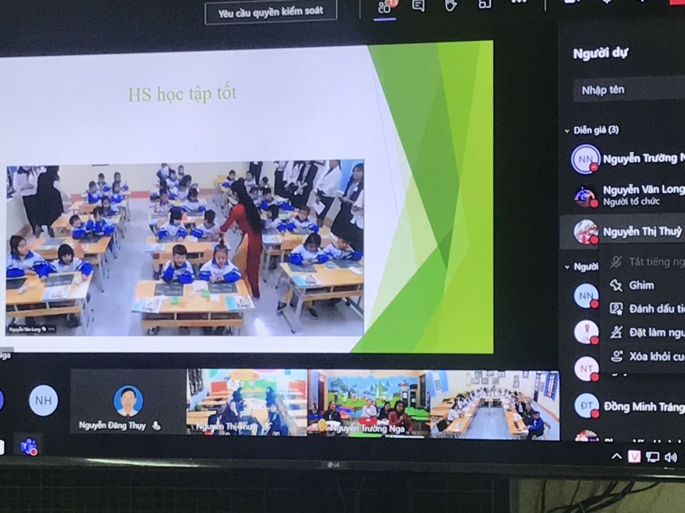

Phòng GD&ĐT Hiệp Hòa: Tổ chức sinh hoạt chuyên môn trực tuyến bậc tiểu học
Nhằm nâng cao năng lực ứng dụng công nghệ thông tin cho đội ngũ cán bộ quản lý, giáo viên trong dạy học, chiều nay 28/01, Phòng GD&ĐT Hiệp Hòa tổ chức sinh hoạt chuyên môn bậc tiểu học qua trực tuyến. Điểm cầu chính tại Trường Tiểu học Thị trấn Thắng có sự tham gia của lãnh đạo và chuyên viên Phòng GD&ĐT huyện Hiệp Hòa. Ở các điểm cầu còn lại có tất cả cán bộ quản lý, giáo viên của 32 trường tiểu học trong toàn huyện. Tham dự sinh hoạt chuyên môn cùng Phòng GD&ĐT Hiệp Hòa có lãnh đạo Phòng GDTH- Sở GD&ĐT tại điểm cầu Sở GD&ĐT tỉnh Bắc Giang.
Lãnh đạo Phòng GD&ĐT Hiệp Hòa dự giờ cùng với giáo viên trong tiết học lớp 1 tại Trường Tiểu học thị trấn Thắng
Kết thúc học kỳ 1 năm học 2020-2021 thực hiện Chương trình giáo dục phổ thông 2018, Phòng GD&ĐT Hiệp Hòa đã đạt được nhiều kết quả đáng kể. Trên cơ sở nội dung chương trình của các bộ sách giáo khoa, các nhà trường và mỗi giáo viên lớp 1 đã chủ động xây dựng kế hoạch dạy để giúp học sinh nắm chắc kiến thức và phát triển cao năng lực, phẩm chất. Bên cạnh cách dạy truyền thống, 100% các nhà trường đã ứng dụng công nghệ thông tin qua việc khai thác nội dung trên internet từ các bộ sách giáo khoa mới hoặc tham khảo nguồn tại liệu phong phú từ các kênh khác. Từ việc ứng dụng này mà nhận thức, tư duy trong việc thiết kế bài học của mỗi giáo viên đều thay đổi, góp phần nâng cao hiệu quả cách học đa chiều và được gắn với thực tế của mỗi học sinh. Thông qua việc cung cấp các ngữ liệu có trên internet, học sinh chủ động trong học tập và giải quyết các vấn đề bài học có hiệu quả cao. Đây là một trong những yêu cầu mà giúp học sinh phát triển cao năng lực cá nhân.
Học sinh tích cực trong hoạt động đọc nhóm ( hình ảnh được chụp từ điểm cầu Trường TH Bắc Lý số 2)
Trường Tiểu học Thị trấn Thắng là một trong những trường đứng đầu của Phòng GD&ĐT Hiệp Hòa trong việc ứng dụng công nghệ thông tin vào dạy học. Tới thời điểm này, Phòng GD&ĐT Hiệp Hòa đã tổ chức nhiều buổi sinh hoạt chuyên môn trực tuyến tại điểm cầu chính của Trường Tiểu học Thị trấn Thắng. Nội dung sinh hoạt chuyên môn tập trung phân tích nhiều vào các bài dạy của lớp 1 theo Chương trình giáo dục phổ thông 2018. Đây là cơ hội để giáo viên toàn huyện được chia sẻ, tháo gỡ dần những vướng mắc, khó khăn từ việc xây dựng kế hoạch, phương pháp tổ chức dạy học đến quá trình khai thác học liệu và cách đánh giá nhằm phát triển cao năng lực của mỗi học sinh.
Những tiếng, từ có vần mới học được học sinh ghi lại trên bảng con ( Ảnh được chụp từ điểm cầu Trường TH Bắc Lý số 2)
Sinh hoạt chuyên môn chiều nay, cô giáo Đặng Thị Anh Quân chủ nhiệm lớp 1 đã dạy môn Tiếng Việt với bài “ Làm anh” và đã đạt được nhiều kết quả nhất định. Là trường tiểu học của trung tâm huyện, học sinh học tập khá tốt. Do đó, bằng cách tổ chức các hoạt động học tập linh hoạt với ứng dụng công nghệ thông tin, cô giáo đã giúp học sinh được đọc bài nhiều dưới các hình thức: cá nhân, nhóm bàn hoặc nối tiếp theo dòng thơ, khổ thơ; cách ngắt nhịp, kết hợp với luyện từ khó, đọc diễn cảm và tìm hiểu kỹ nội dung bài học. Nghe những tiếng đọc bài thơ trôi trảy, cách đọc diễn cảm và những chữ viết rõ ràng trên bảng con của trẻ lớp 1 mới thấy hết được những công sức và sự say mê, sáng tạo dạy học của cô giáo lớp 1 trong mỗi giờ Tiếng Việt như thế. Cô giáo Đặng Thị Anh Quân- Trường Tiểu học Thị trấn Thắng đã thổi vào tâm hồn các em nhạc điệu âm vần của từng dòng thơ và để mỗi em tự nhận ra được trách nhiệm lớn lao của người làm anh, làm chị ở gia đình, trong mỗi hoàn cảnh ở ngoài xã hội và ngay với cả bạn bè trong trường lớp. Đây sẽ là bài học vô cùng quý giá để mỗi giáo viên trong toàn huyện được học tập sẽ linh hoạt áp dụng vào bài dạy ở mỗi trường, phù hợp với từng địa phương. Đó là cách giáo dục mà Chương trình giáo dục phổ thông 2018 đang hướng tới nhằm nâng cao khả năng nhận thức và hành động thiết thực của học sinh trong thực tế hiện nay.
Sau giờ dạy là sự chia sẻ tích cực ở các điểm cầu về bài dạy. Cũng như buổi sinh hoạt chuyên môn tập trung theo truyền thống, cán bộ, giáo viên trong toàn huyện ở các điểm cầu đều đi vào phân tích cụ thể việc học của học sinh; những nguyên nhân đạt được và các phương hướng khắc phục. Trên cơ sở đó, những bài học kinh nghiệm có được trong giờ học sẽ được giáo viên áp dụng tiếp theo phù hợp thực tế ở mỗi nhà trường.
Thầy giáo Vũ Trí Ngư- Phó Trưởng Phòng GDTH- Sở GD&ĐT Bắc Giang phát biểu về buổi sinh hoạt chuyên môn cấp huyện của Phòng GD&ĐT Hiệp Hòa.
Tại điểm cầu từ Sở GD&ĐT, Thầy giáo Vũ Trí Ngư- Phó Trưởng Phòng GDTH- Sở GD&ĐT Bắc Giang đánh giá cao vể kết quả buổi sinh hoạt chuyên môn cấp huyện của Phòng GD&ĐT Hiệp Hòa. Cách thức, nội dung chia sẻ bài dạy của tất cả cán bộ quản lý, giáo viên khá tốt. Những điểm trọng tâm trong giờ dạy mà giáo viên đã thực hiện nhằm phát triển năng lực học sinh, thầy Ngư còn đánh giá rất cao về sự chuẩn bị cơ sở vật chất, trang thiết bị sinh hoạt chuyên môn ở các điểm cầu: Từ máy tính, máy chiếu, internet, webcam ghi hình đến thiết kế powerpoint, cắt ghép hình ảnh, phim… dùng trình chiếu để chia sẻ đã được thực hiện khá nhuần nhuyễn. Thầy Ngư có mong muốn thêm, để đường truyền được tốt hơn nữa, các nhà trường phải đầu tư các thiết bị cao, cũng như thường xuyên tu sửa hệ thống mạng internet, có như vậy mới đáp ứng cao của Công nghệ 4.0 và đổi mới giáo dục hiện nay.
Chia sẻ sau giờ dạy tại điểm cầu chính- Trường Tiểu học thị trấn Thắng
Cô giáo Vũ Thị Ngọc Bích- Hiệu trưởng Trường Tiểu học thị trấn Thắng, huyện Hiệp Hòa, điểm cầu chính đã thực hiện thành công nhiều buổi sinh hoạt chuyên môn trực tuyến cấp huyện cho biết: Sau mỗi buổi ghi hình để sinh hoạt chuyên môn, nhà trường đã nghiêm túc rút kinh nghiệm, từ việc đặt webcam ghi hình, kết quả âm thanh đến kết nối các điểm cầu… Một điểm quan trọng nữa đối với học sinh là, tất cả các tiết dạy được ghi hình qua webcam đều được cắt ghép những phần học tích cực để cho học sinh xem lại. Từ việc xem lại việc học có hiệu quả của mình, cũng như của bạn bè đã tạo cảm hứng cho học sinh học tốt hơn ở những giờ học sau.

Các hình ảnh chia sẻ về bài dạy từ các điểm cầu
Từ các điểm trường của huyện Hiệp Hòa, cán bộ quản lý, giáo viên các nhà trường chia sẻ: Qua hội họp, sinh hoạt chuyên môn trực tuyến đã giúp cho tất cả cán bộ quản lý, giáo viên trong huyện được học tập, chia sẻ cùng nhau nhằm nâng cao năng lực quản lý và dạy học rất nhiều. Nhờ có sinh hoạt chuyên môn trực tuyến, tất cả đội ngũ giáo viên trong huyện, thậm trí ở cả trong tỉnh được giao lưu với nhau. Từ phương pháp dạy học đến thiết kế bài dạy, cách ứng dụng công nghệ thông tin vào dạy học, các hoạt động giáo dục đã được đổi mới rất nhiều. Chính nhờ kết quả của những buổi trực tuyến qua internet đã giúp cho đội ngũ giáo viên mạnh dạn, tự tin, chủ động hơn trong hơn mọi công việc của mình ở nhà trường. Cũng thông qua internet như zalo, febook, zoom.. mà việc liên hệ với học sinh để giao và kiểm tra học tập, giữ gìn sức khỏe của học sinh ở gia đình; liên hệ với phụ huynh để phối hợp chăm sóc, giáo dục học sinh là vô cùng thuận lợi. Do đó cách thức hội họp, sinh hoạt chuyên môn trực tuyến như vậy là rất quan trọng, cần được duy trì và phát huy.
Sinh hoạt chuyên môn theo nghiên cứu bài học là hoạt động thường xuyên nhằm nâng cao năng lực chuyên môn của cán bộ quản lý, giáo viên trong mỗi nhà trường. Năm học 2020- 2021 khi mà thực hiện Chương trình giáo dục phổ thông 2018, cũng như dịch bệnh Covid-19 vẫn còn phát triển khó lường thì việc sinh hoạt chuyên môn của Phòng GD&ĐT Hiệp Hòa đã có nhiều đổi mới nhằm đáp ứng kịp thời yêu cầu của đổi mới căn bản toàn diện giáo dục đào tạo hiện nay. Các cuộc hội họp và sinh hoạt chuyên môn trực tuyến được áp dụng thời gian qua của Phòng GD&ĐT Hiệp Hòa nhằm tạo điều kiện cho cán bộ quản lý, giáo viên đỡ phải đi lại nhưng bước đầu đã nâng cao được hiệu quả quản lý dạy học trong mỗi nhà trường. Để phát huy cao hơn nữa năng lực quản lý của mỗi nhà trường, hướng tới, Phòng GD&ĐT Hiệp Hòa sẽ luân phiên các điểm cầu chính. Đây là cơ hội để mỗi cán bộ quản lý, giáo viên được thể hiện khả năng chuyên môn cũng như ứng dụng công nghệ thông tin trong dạy học hiện nay.
Trần Văn Định- Phó HT Trường TH Bắc Lý số 2